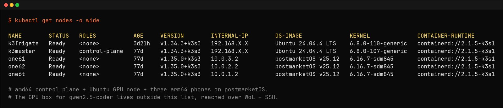
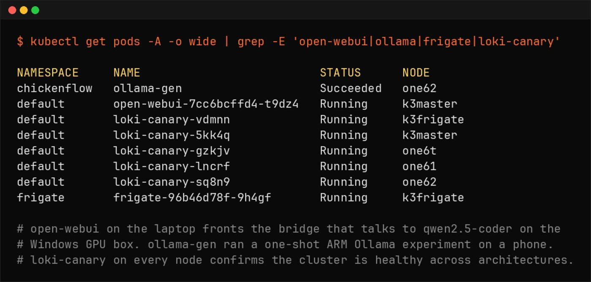

Hybrid AI on k3s: A Sleeping GPU, Local qwen2.5-coder, and Cloud Only When Asked
A homelab Kubernetes cluster, an RTX 3060 that sleeps until called, and a deliberate rule that the smart cloud model stays out of the loop until I decide otherwise.
The substrate. Two amd64 boxes (Ubuntu) and three arm64 phones (postmarketOS) on one cluster. The qwen2.5-coder GPU box lives outside this list, reached on demand.
Why Local at All
The default answer for AI in a platform-engineering workflow is to call a cloud model. It is smarter, it is hosted, it is somebody else's GPU. For most teams, most of the time, that is the right call.
This homelab is not most teams. The work I do here has three properties that change the trade-off:
- It is bursty. I do not need a GPU on standby for eight hours. I need it for the twenty minutes I am drafting a manifest, then it can sleep.
- It is sensitive. The manifests, the kubeconfig, the camera VLAN map, the router scripts — none of that needs to leave the network for a model to help me edit it.
- It is cheap to be wrong about. A homelab can absorb the latency of a wake-up. A production team usually cannot.
So the workflow inverts the default. Local model is the default driver. The cloud model is on call as an auditor — invoked only when I explicitly ask. This is the kind of trade-off I care about as a platform engineer — cost, control, and predictable behavior under constraints, not just raw capability. The companion repo with the bridge scripts, the Ollama config, and the WoL helper lives at github.com/ivemcfire/hybrid-ai-k3s.
Architecture: Before and After
Before
- Cloud LLM (Claude, GPT) on every devops task, even the trivial ones
- Manifests, logs, and kubeconfig fragments routinely sent to a third-party endpoint
- Monthly API spend dominated by routine k3s work I could have done locally
- Latency held hostage to provider availability and rate limits
- No coverage when the home internet went down
After
qwen2.5-coder:14bon a Windows desktop with an RTX 3060 12GB, served by Ollama- Cluster reaches it through Wake-on-LAN + SSH tunnel; idle by default
- Cloud model (Gemini 3.1 Pro) reserved for explicit, manual escalation — audit and second opinion only
- ~85% of routine cluster work stays fully local
- Network egress for AI traffic drops to near zero unless I escalate
The resulting topology — three lanes of compute, one of them asleep most of the time:
+-----------------------------+
| k3master |
| (Lenovo laptop, headless) |
| control plane / ingress |
| ai-bridge service |
+--------------+--------------+
|
---------------------+---------------------
|
+--------------------------+--------------------------+
| | |
+-------+----------+ +----------+----------+ +----------+----------+
| windows-gpu | | phones | | frigate01 |
| RTX 3060 12GB | | 3x OnePlus / pmOS | | i5-6600 / 1050Ti |
| Ollama | | app workloads | | Frigate, recording |
| qwen2.5-coder | | | | |
| WoL + SSH only | | | | |
+--------+---------+ +---------------------+ +---------------------+
|
| manual escalate (rare)
v
+------------------+
| Gemini 3.1 Pro |
| cloud auditor |
| on user request |
+------------------+The Local Model: 12GB Is the Constraint That Shapes Everything
Problem. A cloud model gives you a 200k-token context and you forget the GPU exists. A 12GB consumer card does not let you forget. Every choice — model, quantisation, KV cache size, concurrency — is a negotiation with VRAM.
Constraint. The 3060 has 12GB. Windows + display takes ~1GB before Ollama touches the card. That leaves ~10–11GB for the model and its KV cache. A 14B model at FP16 is ~28GB and is not happening. A 7B at FP16 fits but is too weak for code work.
Decision. qwen2.5-coder:14b quantised to Q4_K_M
(~8.8GB on disk, ~9–10GB resident with active context). Leaves ~1.5GB headroom for
KV cache, which puts usable context near 16k tokens — enough for any single manifest,
log block, or Helm values file I edit in one pass. For longer reviews I split the input
rather than chase a bigger quant.
Trade-off. Q4 quantisation costs you a measurable bit of reasoning quality versus FP16. For autocompletion, kubectl recall, and YAML editing it is invisible. For architectural review or "is this design sound", it is not — and that is exactly the boundary at which I escalate to Gemini.
The actual Ollama run configuration reflects that constraint:
OLLAMA_KEEP_ALIVE=0 ollama run qwen2.5-coder:14b
KEEP_ALIVE=0 makes Ollama unload the model from VRAM as soon as the response
is done, which lets the GPU drop power state and the box go back to sleep. Without it, the
model stays resident and the WoL strategy quietly stops working.
The model selection is the load-bearing decision of the whole setup. Everything else — the bridge, the wake-up, the escalation rule — is plumbing around it.
The Bridge: Kubernetes Does Not Need to Own the GPU
Problem. The cluster is k3s on Linux. The GPU box is Windows because the existing CUDA setup, the gaming/VR workload, and the household constraints all live there. Forcing Windows under k3s would mean WSL2, GPU passthrough quirks, and a node that never quite behaves like its Linux peers.
Constraint. I want the GPU on demand, not in the cluster's permanent topology. And I want one place where the cluster talks to the model — not every pod knowing about Ollama.
Decision. The Windows box stays outside the cluster. A small
ai-bridge service runs on the control-plane laptop, exposes a
Kubernetes-internal endpoint, and on each request: (1) sends a Wake-on-LAN packet if the
box is asleep, (2) waits for SSH to come up, (3) forwards the request through an SSH tunnel
to Ollama on 127.0.0.1:11434, (4) lets Windows go back to sleep when idle.
The bridge exposes a simple HTTP endpoint inside the cluster and translates incoming requests to Ollama's REST API over the SSH tunnel. From the consumer's point of view it is just another in-cluster service. The wake-up, the tunnel, and the sleep timer are all behind that one endpoint.

The pods that matter for the AI loop. open-webui on the laptop fronts the bridge that talks to qwen2.5-coder on the Windows GPU box. ollama-gen ran a one-shot ARM Ollama experiment on a phone. loki-canary on every node confirms the cluster is healthy across architectures.
Trade-off. This is not a "real" Kubernetes integration. There is no
nvidia.com/gpu advertised on the cluster, no GPU operator, no scheduling. It
is a deliberately small bridge that respects an OS boundary. In exchange, the GPU node is
not a cluster member, does not need k3s upkeep, and does not pretend to be highly
available. It is a sleeping appliance.
The lesson here is the one that took me longest to internalise: Kubernetes does not need to own every box on the network. Sometimes the right architectural call is not to force a piece of infrastructure into the cluster, even when you could.
Cold Start Is the Tax You Pay for the Power Bill
Problem. A sleeping GPU is great for the electricity bill and terrible for first-request latency. Wake-on-LAN, BIOS POST, Windows resume, Ollama warm-up, and KV cache priming for a 14B model add up.
Constraint. Some tasks tolerate a 10–15s cold start (drafting a manifest from scratch). Others do not (autocomplete in the IDE while typing). Treating both the same is what makes the workflow feel broken.
Decision. Two-tier behavior in the bridge:
- Cold path — accept the wake-up. For one-shot tasks I batch the request and absorb the latency.
- Warm window — when I start a focused session, I send a
keep-warmping that tells the bridge to suppress the sleep timer for the next 60 minutes. The box stays awake while I work and goes back to sleep when I am done.
Trade-off. The keep-warm window is a manual signal, not an inferred one. I tried auto-detecting active sessions and it kept getting it wrong — keeping the box awake overnight after one stray request. Manual is uglier and more reliable. This is not ideal, but it is honest.
Power numbers from the wattmeter on the UPS branch: the box draws ~3W asleep, ~50W at desktop idle, ~150W under sustained inference. Over a typical week the WoL-managed pattern saves ~25–30 kWh versus leaving it on. That is roughly the difference between this being a hobby and being something the household notices on the bill.
Manual Escalation: Why Gemini Is Not in the Loop By Default
Problem. Local models hallucinate confidently. So do cloud models, but cloud models hallucinate better — closer to plausible, which is sometimes worse. Auto-routing every "hard" question to the cloud is the obvious move. It is also the wrong one.
Constraint. Auto-routing means a heuristic decides what leaves the network. Heuristics drift. I do not want my kubeconfig or my router script to leave the LAN because a router function got it wrong about the difficulty of a task.
Decision. Escalation to Gemini 3.1 Pro is manual only. I invoke it explicitly, with a sanitised payload, when I want one of two things:
- Audit — I have a plan from the local model, it looks reasonable, and the change is risky enough that I want a second opinion before I apply it. Gemini gets the plan, the relevant manifests with secrets stripped, and an instruction to look for what is wrong, not what is right.
- Advisor — I am stuck on a design call where the local model is not strong enough. Gemini gets the constraint set and the options I am weighing, and I want it to push back on my framing.
Trade-off. I do more typing per escalation. In exchange, I always know which questions left the network, and I have an audit log of every cloud call. The local model handles the fast, cheap, low-stakes work. The cloud model handles the rare, high-stakes work. Each is doing the job it is shaped for.
The default is: nothing leaves the network unless I decide it is worth leaving.
This is the part of the workflow that maps most directly to platform engineering: routing decisions across heterogeneous resources, with explicit boundaries and explicit costs. The substrate happens to be language models. The discipline is the same one you apply to multi-region deployments or tiered storage.
Design Decisions
The non-obvious calls, kept short:
qwen2.5-coder:14bQ4_K_M, not 7B FP16 or 32B at any quant — best fit for 12GB; 7B was too weak for k3s YAML, 32B did not fit even at Q3 with usable context- Ollama on Windows, not WSL2 — keeps the existing CUDA path; one less moving part
- Bridge as a service on the laptop, not a sidecar in every consuming pod — single SSH key, single WoL responsibility, single audit point
- Wake-on-LAN, not always-on — power bill is the constraint; cold-start latency is the price
- Manual
keep-warm, not auto-detection — heuristics kept the box awake overnight; manual is uglier and more reliable - Manual Gemini escalation, not auto-routing — sovereignty over what leaves the network beats convenience
- Sanitisation pass before any cloud call — IPs scrubbed to
192.168.X.X, hostnames toexample.com, secrets stripped; same playbook as the companion repos
Things That Went Wrong
Wi-Fi NIC ate the WoL packet. Windows had "Allow this device to wake the computer" disabled for the Realtek NIC after a driver update. The cluster sent perfectly good magic packets into the void for two days before I noticed it was sending requests that never returned. Fix was a checkbox. The lesson was about observability — the bridge now alerts on consecutive WoL timeouts.
Ollama did not unload the model on idle. Default Ollama behavior on
Windows kept the model resident in VRAM after every request, which meant the GPU never
dropped power state, which meant the box never went to sleep. Set
OLLAMA_KEEP_ALIVE=0 and the model unloads after the response. The wake-up now
costs an extra ~3 seconds for the model load on top of the OS resume. Worth it.
SSH key drift after a Windows update. Windows OpenSSH server reset its host key on a feature update and the bridge started failing strict host-key checks. I had a choice between weakening the check and accepting the breakage. I accepted the breakage and now the bridge logs the host key mismatch loudly instead of silently retrying.
The local model agreed with me too easily. I drafted an autoscaler config that conflated CPU and memory thresholds, asked the local model to review it, and got back "looks good." Gemini caught it on escalation in one prompt. The local model is fine for what does this do; it is weaker at is this the right thing to do. That is exactly the boundary the escalation rule is meant to respect.
Hallucinated kubectl flag. qwen2.5-coder
confidently produced kubectl edit --all-namespaces, which does not exist.
Caught by dry-run before it became a real problem. The fix here is not at the model level
— it is at the workflow level: nothing the AI suggests gets applied without
--dry-run=server first. That rule predates the AI and survives it.
Impact
Approximate, measured over the 30 days after the workflow stabilised:
- Cloud LLM API spend: ~$80/mo → ~$5/mo (Gemini calls only, on explicit escalation)
- Manifests / configs leaving the network: 100% of AI-assisted work → ~5% (sanitised escalation payloads only)
- First-token latency, warm session: ~600 ms (cloud) → ~150 ms (local Ollama over LAN)
- First-token latency, cold start: N/A → ~12–15 s (WoL + resume + model load)
- Mean time to usable response (warm): noticeably reduced — local inference over LAN beats round-tripping to a provider, even on good days
- Routine k3s tasks fully covered locally: ~85% (drafting manifests, log triage, kubectl recall, YAML edits)
- GPU node average power draw: always-on baseline ~50 W → WoL-managed ~12 W
- Estimated power saved: ~25–30 kWh/month
- Offline coverage: zero AI assistance when WAN was down → full local coverage
Numbers are from a homelab wattmeter and a small log scraper, not a benchmark rig. They are directionally honest, which is the point — the workflow earns its complexity on cost, latency, sovereignty, and offline behavior all at once, not on any single one.
The Payoff
The workflow moved more than just where inference runs. It moved the defaults. The local model is what answers first. The cloud model is on call. The GPU is asleep until I ask for it. Each piece is doing the work it is shaped for, and the routing rule between them is explicit.
Cloud AI is the better model. Local AI is the better default. Knowing where that line sits — and being deliberate about who crosses it and when — is the platform engineering.
The substrate is a sleeping GPU and a coder model. The skill is the boundary.
That boundary is the same one you draw for region failover, storage tiers, or any other heterogeneous resource. The fact that it is language models this time is incidental.
Cluster Context
The same k3s cluster from previous posts, plus one external box that the cluster talks to but does not own.
| Node | Role | Arch | Hardware |
|---|---|---|---|
| k3master | Control plane, ingress, ai-bridge | amd64 | Lenovo laptop, headless |
| frigate01 | Frigate, GPU inference, recording | amd64 | i5-6600, 12GB RAM, GTX 1050Ti, 4TB HDD |
| phones | Application workloads | arm64 | 3x OnePlus on postmarketOS |
| windows-gpu | AI inference (external, on-demand) | amd64 | Desktop, RTX 3060 12GB, Ollama |
Frigate handles its own GPU on its own node. The phone cluster runs application backends. The control plane brokers AI requests to the Windows box and gets out of the way. Each box has a clear job, the boundaries are documented, and one of them sleeps most of the day.
Repo: github.com/ivemcfire/hybrid-ai-k3s — bridge service, WoL helper, Ollama config, sanitisation script, escalation playbook.
Previous posts: Frigate NVR Migration on k3s: What Breaks on Bare-Metal · Running Edge AI on Broken Phones · The Kubernetes Sidecar Pattern · Running a Local AI Model on My Homelab Kubernetes Cluster